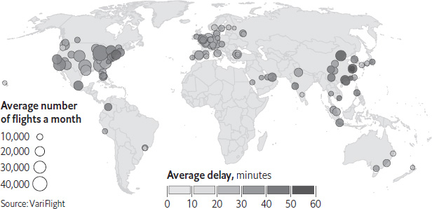
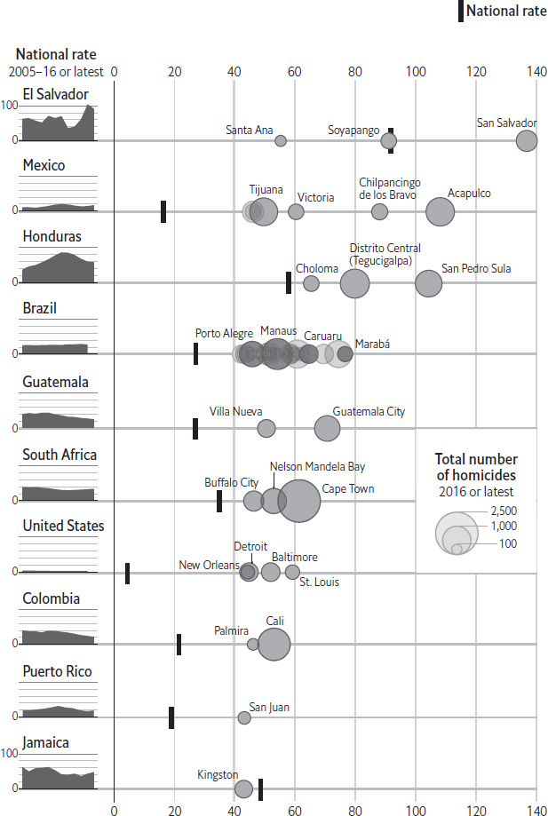
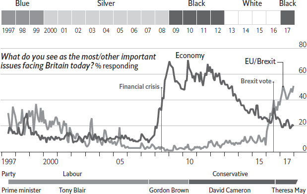
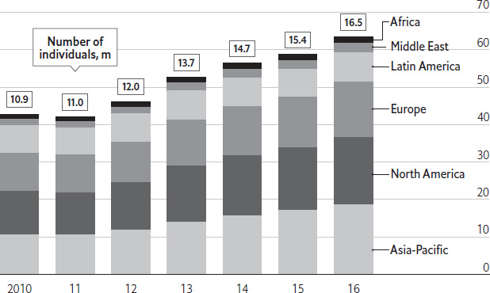
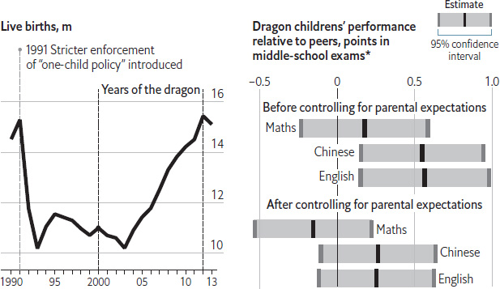

The shifting sands of the Sahara have long been crossed by trade and smuggling routes. Traffickers send people and drugs north over the desert. But they have a problem: what should they put in their empty trucks as they head back south? A popular answer, it would seem, is pasta. Some sources reckon that, apart from people, pasta is the most smuggled product (by weight) to cross the desert. Drug trafficking and gunrunning may earn fatter margins. But many smugglers diversify their loads by pushing penne. Why?
In part, the trade is fuelled by subsidies in north African countries. Algeria, for example, spends about $28bn a year keeping down the prices of food and energy. In Libya, which also subsidises food prices (though somewhat erratically, because of the civil war), 500g of pasta can be bought for as little as $0.15. In Timbuktu, an ancient city in Mali, hundreds of miles to the south-west, the same bag of pasta might fetch 250 CFA francs (the currency used in several west African states), which is equivalent to $0.50. In Senegal or some of the posher parts of Bamako, Mali’s capital, it is worth even more: about 800 CFA francs, or $1.50.
Another incentive to smuggle is found in west Africa. Under the region’s customs union, imports of pasta face a tariff of 20% and value-added tax of 15%. So smugglers of contraband pasta can easily undercut legal suppliers. Smugglers rarely answer surveys, so the facts are hard to pin down. But a study carried out in 2015 by the Economic Research Forum, a think-tank based in Egypt, found that pasta was the main product going across the Sahara from Algeria to Mali, accounting for about one-third of the trade. The researchers reckoned that smugglers earned profits of 20–30%.
The illicit pasta trade is not just making its mark in countries south of the Sahara, but also on the desert itself. As they ply their trade, many smugglers have taken to poking sticks of spaghetti into the sand as waymarks.
Guinea. Equatorial Guinea. Guinea-Bissau. Papua New Guinea. The Gulf of Guinea. Guinea, Virginia. Guinea, Nova Scotia. The world has more Guineas than a pirate’s treasure chest. What explains the prevalence of the name?
Etymologists cannot agree on the origin of the word “Guinea”. Some trace it to a word in Tuareg, a Berber language, for black people: aginaw. Others think it originally referred to Djenné, a trading city in modern-day Mali. In the 15th century, Portuguese sailors used “Guiné” to describe an area near what is today Senegal, and by the 18th century, Europeans used “Guinea” to refer to much of the west African coastline. As colonisers carved up the continent, many European nations controlled their own places called Guinea. At independence, French Guinea became Guinea, Spanish Guinea became Equatorial Guinea, and Portuguese Guinea became Guinea-Bissau. West Africa was a major source of gold, hence the name “guinea” for the British gold coin. In 1545, on the other side of the world, Yñigo Ortiz de Retez landed on an island north of Australia. Struck by the resemblance between its inhabitants and people from west Africa, the Spanish explorer named the island “New Guinea”. The word “papua” probably comes from the Malay papuwah, meaning “frizzled”, perhaps a reference to the islanders’ hair.
In addition to the various places, there are also animals: the guinea pig, most famously, and the guinea fowl. The guinea pig comes not from any of the Guineas in Africa, but from South America. Muddled Europeans may have confused Guinea with Guyana, today South America’s only English-speaking country. Guyana has nothing to do with Guinea: its name probably comes from a native word meaning “land of many waters”. Some scholars, however, propose an alternative etymology for the guinea pig: the rodents were brought to Britain on “Guinea-men”, trading ships that shuttled between Britain, South America and Guinea.
The guinea fowl, for its part, did come from west Africa. But it, too, has a complicated history. The birds were originally introduced to Britain via the Ottoman empire and so were called “turkeys”. Later, early English colonists in America confused the native birds there with the African fowl, and called them “turkeys” too. (In fact, they are a larger and entirely separate species.) All in all, it is a linguistic mess. It is unclear where the word originally came from, but it was a series of historical accidents and misunderstandings during the colonial period that led to the modern world’s proliferation of guineas.
For a quiet country, New Zealand has a peculiar problem with gangs. It is reckoned to have one of the highest membership rates in the world. In a population of 4.7m, police count over 5,300 mobsters or “prospects” who are angling to join. Cumulatively, that makes the groups larger than the army. Bikers like the Hells Angels and offshoots from Australian gangs are among its 25 recognised groups, but two Maori crews dominate: Black Power and the Mongrel Mob. Members signal their allegiance by sewing patches onto leather jackets or branding themselves with dense tattoos. A closed fist marks Black Power, which took its name from the American civil-rights movement, and a British bulldog signifies the Mongrels. In all, indigenous Maori people make up three-quarters of the country’s gangsters.
They have dominated the gang world since the 1970s, when many moved to the cities, where they endured discrimination and ended up in poverty because of difficulties finding work. Opportunities have improved since, but life is often harder for indigenous people than for other New Zealanders. They do worse in school, suffer poorer health and die younger. Some turn to the gangs in search of power or oblivion. Some become members in jail, forced to join a crew simply to protect themselves. Others seek something more positive: whanau, or community. Many recruits join simply because their fathers are members. The gangs, they say, are like a family. New Zealand’s high rate of gang membership is, in short, a reflection of the difficulties faced by Maori people.
Most New Zealanders never encounter this underworld, because violence generally occurs between the gangs, and their turf wars have abated in recent decades. Today much of the gangs’ criminal activities relate to drugs. Corrections officers say that foreign syndicates use the biker groups to distribute methamphetamines. Gang members account for more than 14% of the charges of conspiracy to deal methamphetamines, and of murder, laid in New Zealand. They fill about a third of prison cells. This does much to explain why more than half of all the nation’s inmates are Maori, although they make up only 15% of the population.
The popularity of methamphetamines within the gangs has also undermined them. A handful of leaders have banned the drug’s consumption after witnessing the damage it has wrought on their communities. Some have attempted to clean up their branches in other ways. The groups used to have horrific reputations for gang rape, but Black Power now prohibits it, and has also moved to reduce domestic violence more generally. Female associates of Black Power and the Mongrel Mob report that their lives are much improved. But while reform-minded members of the more established groups are maturing, a younger set of Los Angeles-style street gangs is now on the rise in New Zealand, many of them Maori and Polynesian. Their bling-obsessed teenage recruits are violent and unpredictable. New Zealand’s high rate of gang membership seems likely to endure.
Philippe Moscato, an exorcist, walks from room to room in a large Paris flat, sprinkling blessed water and offering incantations. “Spirits away!”, he calls out, telling otherworldly pests that their attacks will, from now on, be futile. He informs the homeowner that the air will improve after his work is done, with the entire apartment block likely to benefit. For the ritual, which lasts an hour, Mr Moscato pockets €155 ($190). He says he despooks properties in Paris a few times each week; roughly once a week, he conducts an exorcism of a person. He is not alone. Look online and a host of private exorcists, healers, mediums, kabbalists, shamans and energiticians offer similar services, for fees as high as €500 per ceremony. Some offer to help a business out of a bad patch, or to restore love to a failing relationship. Many help with supposed hauntings of properties. One self-declared exorcist near Paris says he earns as much a €12,000 a month (before tax) by working 15-hour days, including consultations by phone. Why is the exorcism business booming in France?
According to the exorcists, they thrive because customers get much-needed benefits from the rituals. Mr Moscato, for example, describes an “avalanche” of demand after the terrorist attacks in France late in 2015. He suggests that three parts of France are particularly vulnerable to “black magic” – Paris, Lyon and the French Riviera, where local mafia are said to be active – and that this can be countered by sufficiently strong exorcists. Alessandra Nucci, a writer on Catholic matters who has attended a course run by the International Association of Exorcists (IAE) in Rome, says there are more and more private operators in Europe who charge for their services. She suggests they are filling a vacuum left by priests reluctant to do the job: the church “has, for too long, neglected exorcisms, despite strong demand from the public”, she says.
The demand is real, but reasons for it are mixed. Roughly half of the customers for one exorcist near Paris, for example, are immigrants, notably Africans ready to turn to fee-charging and charismatic exorcists rather than church-sanctioned ones. Other clients, such as the owner of the Paris flat visited by Mr Moscato, sign up after hearing of friends who did so, in part – though not only – for the entertainment of witnessing the ritual. They are not church-goers and would have been unlikely to ask a priest to bless their home. Many are encouraged by the ease of finding and booking an exorcist online. It could be that demand for private practitioners previously existed but is now more public thanks to the internet, where exorcists can easily advertise their services. Television shows, such as Fox’s The Exorcist, could also be encouraging customers to try a ritual.
Exorcism remains a niche business, but could become more popular among those not of the traditional church, such as immigrants. House blessings, like those conducted by Mr Moscato, appear to be harmless entertainment. But risks exist: occasionally victims of violent rituals, including children, have been killed in beatings that are supposed to chase evil spirits from a person. The more responsible fee-charging exorcists say a diagnosis or exorcism of a person should happen only after a patient has consulted a doctor or psychiatrist. In general, those who pay for such rituals appear to believe they get some kind of result, just as others opt for homeopathic medicines or astrological readings and expect some positive effect. Any supposed benefit follows from the fact that the customer first believes in the service – which is true of many other businesses, too.
China’s airports are a marvel. During the past decade, nearly ten new ones have opened every year. Sleek, spacious, modern buildings, outfitted with the latest technology, they can shimmer like visions from the future. Yet they are also objects of dread and loathing for just about anyone who has spent time passing through them. It is not the buildings themselves so much as what they represent: long waits. China’s airports may be some of the world’s most elegant, but they are also global leaders in flight delays. Of the world’s 100 busiest airports, the seven that suffer the longest delays are all in China, including the country’s major hubs in Beijing, Shanghai and Shenzhen. At the 13 Chinese airports that rank among the world’s top 100, flights are delayed by 43 minutes on average. The global norm, excluding China, is 27 minutes. The only other airports that come close to rivalling China for tardiness are the three that serve the crowded skies around New York: JFK, LaGuardia and Newark.
Congestion is only a partial explanation for China’s delays. China is already the world’s second-biggest aviation market, with about half a billion passengers per year, and the industry is still expanding at a double-digit rate. It is destined to overtake America as the world’s busiest market (based on passenger numbers) within a decade, according to the International Air Transport Association. But when looking at numbers of flights, China actually has a surprising amount of slack. Just one of its airports is among the world’s 20 busiest for flights (Beijing Capital International, which ranks seventh). Chinese airports, in other words, tend to have fewer flights, and bigger planes carrying more passengers. That should, in principle, make it easier to avoid delays. What’s more, given that Chinese airports generally have ample runway space and state-of-the-art air-traffic-control systems, they should be better at getting planes into the air on time.
Why is China’s record so poor? The first reason is that its airports err on the side of extreme safety. At many big airports around the world, intervals between flights (whether taking off or landing) have been compressed to as little as 30 seconds. In China they are often as long as two minutes, even when there is a backlog of planes. In the summer months, when weather is wetter, the timeliness of Chinese flights deteriorates markedly (see chart). Just two out of every five flights departed as scheduled in July 2017. Nevertheless, at a time of such rapid growth in air travel, the caution of China’s air-traffic controllers is understandable. There have been no significant accidents on their watch over the past five years.
Airports with the highest average number of departures per month

A second factor ought to be more readily solvable. The military controls roughly three-quarters of airspace in China, and shunts civilian traffic aside. When the air force takes flight, commercial planes have no choice but to wait on the runway, sometimes for hours. The government has long vowed to do a better job of integrating civil and military management of airspace, and to release more air corridors for commercial use. Yet improvements have, so far at least, been imperceptible. It is a touchy subject. Airlines rarely inform passengers that military exercises are the reason for late departures, instead citing generic air-traffic controls or inclement weather, even on clear days. But official figures published in 2017 revealed that military activity was responsible for about a quarter of delays. It all adds up to more time stuck inside China’s gleaming (but frustrating) airports.
Drop a pin on a map of eastern Africa, and the chances are it will not land on a healthy democracy. Somalia and South Sudan are failed states. Sudan is a dictatorship, as are the police states of Eritrea, Rwanda and Ethiopia. President Yoweri Museveni of Uganda has ruled uninterrupted since 1986, and has passed a law to remove a constitutional age limit so he can cling on longer. Elections in Tanzania have never ousted the Party of the Revolution; it and its predecessor have governed continuously since independence in 1961. Even Kenya, once the region’s most vibrant and competitive democracy, is struggling. In October 2017 Uhuru Kenyatta was re-elected president with 98% of a preposterously flawed vote. In this context, tiny Somaliland stands out. In November 2017 citizens of this internationally unrecognised state elected a president in its sixth peaceful, competitive and relatively clean vote since 2001. This unparalleled record makes it the strongest democracy in the region. How has this happened?
A peculiar history helps. Somaliland was a British protectorate, before merging with Italian Somalia in 1960 to form a unified Somalia. It broke away in 1991, and now has a strong sense of national identity. It was one of the few entities carved up by European colonists that actually made some sense. Somaliland is more socially homogeneous than Somalia or indeed most other African states, and greater homogeneity tends to mean higher levels of trust between citizens. A decade of war against the regime of Siad Barre in Mogadishu, Somalia’s capital, reduced Somaliland’s two largest cities to rubble, yet produced a flinty patriotic spirit. And the Somali National Movement (SNM), which led the fighting, cultivated an internal culture of democracy. Its leadership changed five times in nine years, and transferred power to a civilian administration within two years of victory.
But it is the absence of international recognition that may matter most. Muhammad Haji Ibrahim Egal, the president of Somaliland from 1993 to 2002, argued in 1999 that recognition would be dependent on the country’s pursuit of democracy. He proceeded to devise a constitution that was put to a popular referendum in 2001. For fear of encouraging other separatist movements in the region, the international community, following the African Union, has never obliged by recognising Somaliland. But rather than stunting democracy, this response ensured that democratisation spread from the bottom up. Donors often demand democratic reforms from African countries as a condition of financial aid. Because unrecognised Somaliland is cut off from most external assistance, the social contract between government and citizens has become unusually strong. Democracy evolved out of a series of mass public consultations – clan conferences – which endowed it with an unusual degree of legitimacy. The system’s most striking feature is the upper house of clan elders, known as the “Guurti”, which ensures broadly representative government and underpins much of the country’s consensual political culture.
Somaliland’s democracy is by no means spotless. Corruption is endemic, and the media are seldom critical. The influence of the clans has been muted but not eradicated. And elections are repeatedly delayed. The vote in November 2017 was overdue by more than two years, by which time all branches of government had outlived their mandates. The lower house had been sitting for 12 years; the Guurti has sat unelected since it was formed in 1993. And there may be even bigger challenges in the future. In 2017 Somaliland signed agreements with the United Arab Emirates to build a new port and a military base at the coastal town of Berbera. The former, valued at over $400m, was the country’s largest-ever investment deal. Nation-building on a shoestring helped keep Somaliland’s politicians relatively accountable, and helped to maintain the delicate balance between clans. That may not be the case for much longer. But in the meantime, it is a beacon of democracy and an example to its neighbours.
If the best-known emblem of Mongolia is its mighty 13th-century conqueror, Genghis Khan, the second best-known is probably the humble nomadic dwelling known in English by the Turkic word yurt. Legend has it that Genghis Khan himself ruled his vast empire from – suitably enough – an especially large one, nine metres in diameter. The Mongolian word for yurt, ger, has come to mean “home” and it also forms the root of the verb “to marry”. Why, then, does this central and beloved bit of cultural patrimony seem to be going out of style?
With their collapsible lattice frames made of wood and their highly efficient felt insulation, yurts are both warm and transportable. Indeed, many nomads have transported their yurts to the edges of the capital, Ulaanbaatar. On three sides of the city, ramshackle neighbourhoods are populated by migrants from all across Mongolia’s vast countryside. These steadily growing hillside areas are universally referred to as “ger districts”, and those white domes are their most prominent feature when viewed from the heart of the city. But fewer than half of the residents in these districts actually live in yurts. Most have taken the 700 square metres of land allotted to them by national law and built simple fixed structures of wood, brick or concrete instead.
The number of rural dwellers migrating to cities increased suddenly with Mongolia’s transition, in 1990, from a Soviet-imposed communist system to democracy. Since 2000 the influx of herders to Ulaanbaatar, by far the country’s largest city, has grown especially fast. Drought, together with an increased frequency of the phenomenon known in Mongolian as a dzud (an especially dry summer followed by an especially harsh winter that livestock cannot survive), have made herding more difficult. At the same time, Ulaanbaatar’s rapid development has made it more attractive as a source of both job opportunities and services, including health care and education. But city officials have so far failed to provide basic infrastructure to the growing ger districts. The pit latrines that serve well enough for yurt dwellers in sparsely populated rural areas are ill-suited to the densely packed settlements on Ulaanbaatar’s edges. Neither are the ger districts connected to city heating systems, forcing residents to burn coal for their cooking and heating needs. This generates horrendous pollution, and a good deal of grumbling among residents of the city’s built-up areas.
Added to this is the fact that once they give up herding for city life, migrants have less use for one of the yurt’s main advantages: portability. All this explains the results of a survey of Ulaanbaatar’s ger-district residents, published in 2015: 72% of respondents said they would move into an apartment if they could. And even in the countryside Mongolians are heeding the siren song of modern living and being lured out of their yurts, albeit at a slower rate. Between 2010 and 2015, the proportion of households living in yurts declined by 1.3 percentage points, according to Mongolia’s national statistics bureau. It will take some time, but the noble yurt looks like it is on its way to joining Genghis Khan as a symbol of Mongolia’s proud past.
Cocaine is grown primarily in South America, and trafficked to the world’s biggest market, the United States, via Central America and the Caribbean. The land routes originate mainly in Colombia, and pass through the small nations of El Salvador, Honduras and Guatemala before traversing Mexico. It is little wonder, then, that Latin America remains the world’s most violent region not at war. According to data from the Igarapé Institute, a Brazilian think-tank, 43 of the 50 most murderous cities in the world in 2016, and eight of the top ten countries, are in Latin America and the Caribbean. (War zones, where numbers are hard to verify, are excluded.) Conflicts between gangs, corruption and weak public institutions all contribute to the high levels of violence across the region.
The top of the ranking has not changed. In both 2015 and 2016, El Salvador was the world’s most violent country, and its capital, San Salvador, was the most murderous city. However, the 2016 numbers do represent a slight improvement: the national murder rate fell from 103 killings per 100,000 people in 2015 to 91 the following year, and San Salvador’s murder rate from 190 to 137. Most analysts credit a clampdown by government security forces for this reduction, though tough-on-crime policies do little to address the underlying causes of gang violence. A similar downward trend was evident in neighbouring Honduras: San Pedro Sula, which for years wore the unwelcome crown as the world’s most murderous city, ranked third.
However, spikes in violence in neighbouring countries suggest that anti-gang policies are merely redistributing murders geographically rather than preventing them. Acapulco, a beach resort on Mexico’s Pacific coast, recorded 108 homicides per 100,000 people in 2016, placing it second behind San Salvador. That reflects the nationwide trend: Mexico’s overall rate rose from 14.1 killings per 100,000 people to 17. That figure nearly equals the previous violent peak of Mexico’s drug wars, in 2011. As a result, six Mexican cities rank among the top 50, three more than did so a year earlier.
Homicides per 100,000 population, 50 highest cities*, 2016 or latest

Source: Igarapé Institute
*With populations of 250,000 or more
The middle of the list is dominated by Brazil: the world’s second-biggest cocaine consumer is home to half of all cities in the ranking. That mostly reflects its large population. During 2016, violence shifted from place to place within Brazil: the murder rate fell in the largest cities, but increased in smaller ones. In Maraba and Viamão, homicides rose by 20% in a year, whereas in São Paulo, Brazil’s most populous city, murders fell by 55% from 2014 to 2015. Unlike in Mexico and Central America, there is evidence of a slight overall improvement: the national homicide rate fell from 29 per 100,000 in 2014 to 27 in 2015, the latest year for which data are available. Nonetheless, by sheer virtue of its size, Brazil reigns as the world’s overall murder capital: 56,212 people were killed there in 2015.
Only two countries outside Latin America contain cities in the top 50: the United States and South Africa. In America, the only rich country on the list, a spike in homicides propelled two more cities, Detroit and New Orleans, to join St Louis and Baltimore, which also figured on 2015’s list. Each has a rate that is around ten times the national average of 4.9 homicides per 100,000 people. South Africa is the only country outside the Americas in this ranking. Two new cities, Nelson Mandela Bay and Buffalo City, have been added to the list, mainly because data collection is improving in the country. The homicide rate in South Africa climbed by 5% last year, though other violent crime dropped.
Crime in Britain has been falling, as in many rich countries. In England and Wales the decline has been dramatic: since the mid-1990s the number of offences has fallen by half. Vehicle theft has dropped by 86% since 1995 and burglaries by 71%. The most reliable measure of lawbreaking, the Crime Survey for England and Wales, is based on the experiences of victims, rather than perpetrators. But evidence from elsewhere suggests that within the broader decline in lawbreaking is another even more striking decline: that in crime committed by young people.
The number of youngsters aged between ten (the age of criminal responsibility in England and Wales) and 17 entering the criminal-justice system for the first time has tumbled, down by 84% since 2006. By contrast, the number of adults has declined by just 46%. Those figures partly reflect the fact that the police have abandoned performance targets that had encouraged them to pick up misbehaving youngsters; catching spray-painting teenagers is easier than nabbing burglars. But the decrease has been so dramatic that it almost certainly points to children being more law-abiding today than they used to be. Other measures support this thesis. According to the victims of violence interviewed for the crime survey, between 2006 and 2016 the proportion who thought their attacker was aged 16 or under fell by almost half, from 14% to 8%. And between 2012 and 2015 the proportion of pupils at secondary schools were who temporarily suspended fell from 8.3% to 7.5%. Declines in the numbers of youngsters arrested have also been seen in countries such as Germany, the Netherlands and America.
Youngsters have become more law-abiding for similar reasons as their elders. Items that they used to steal, such as televisions and car radios, have fallen in value, so taking them is no longer worthwhile. Security measures such as burglar alarms have made it harder to break into houses. Central locking and other security features have made stealing cars trickier. Better and smarter policing has helped too. But some factors may have helped to drive down crime among young people specifically. In particular, they are living more abstemiously. The proportion of British children who said that they had ever experimented with drugs fell by half between 2001 and 2014. Among adults, the figure barely shifted. In 2014 just 38% of 11–15 year-olds admitting to having tried alcohol; in 1988 over 60% said that they had tried drinking.
This more sober lifestyle affects crime rates in three ways, argues Tim Bateman of the University of Bedfordshire. Less drug-taking means less law-breaking to fund purchases. Crimes related to the possession and acquisition of drugs also decline. And children are less likely to commit crimes when they are not drunk or high. Technology may also be helping to make the world less crime-ridden. Spending hours on computers and smartphones provides a benign alternative to getting up to no good. According to a study in 2012 by researchers from the London School of Economics, British children spend more time online and start going online at an earlier age than the European average. These trends bode well for the future: research shows that law-abiding children are more likely to turn into law-abiding adults.
Car buyers are said to choose vehicles that reflect their personality. In Britain the colour may also reflect the national mood. In the late 1990s Britons bought cars in bright primary colours, perhaps mirroring the optimism of the early years of Tony Blair’s New Labour administration. In the following years, as the economy ticked along steadily, they went for sensible greys and silvers. As economic hardship followed the financial crisis, sentiment turned darker as black cars predominated.
The popularity of white cars is harder to explain. Once so unpopular that police forces stopped using them because resale values were so low, white cars go hand in hand with Britain entering new territory when David Cameron’s coalition government starting making inroads with policies that reversed the country’s gloomy mood. Or perhaps draining a car of colour is another way of not making a firm choice. At least the reversion to black is easier to comprehend, as the haplessness of Theresa May’s government and worries over Brexit have darkened the outlook for Britain’s drivers.
Back to black
Britain, new car registrations, by favourite colour

Sources: Society of Motor Manufacturers and Traders; Ipsos MORI
How abnormal are Swedes, and other people in the Nordic region, in paying tax? A general stereotype for Europe holds some truth: unlike tax-shy southern Europeans, those in the far north pay up readily to get comprehensive, efficient government services – and to live in societies with unusually equitable income distribution. In Sweden, even after years of slashing high taxes (an inheritance tax went in 2005, another for wealth disappeared in 2007 and corporate tax is low, at 22%), the share of the national income claimed by the state remains high. The OECD, a club of mostly rich countries, reckons Sweden’s government spent over 51% of GDP in 2014. Income-tax rates for the well-off can be as high as 57%. And the Swedes comply. Sociologists, economists and others have long debated this readiness to cough up for the common good. Lutheran beliefs about the importance of supporting the whole community might be a factor, along with a strong sense of cultural homogeneity. Or maybe the generations spent huddling together to survive long, dark winters played a role.
February 2017 brought a new puzzle, however, with evidence that some Swedes had been deliberately overpaying their taxes. Official figures published that month showed tax revenues had poured in far faster than expected during 2016. Sweden’s government ended up with a budget surplus of 85bn kronor ($9.5bn) for the year, and nearly half of that, 40bn kronor, was the result of tax overpayments by firms and individuals. This appeared to be deliberate. It also posed a conundrum for civil servants responsible for making repayments and managing the funds. What was going on?
This was not evidence, in fact, of a new or extreme culture of Nordic eagerness for paying tax. Instead the explanation is financial, a bizarre result of the existence of negative interest rates. Starting in March 2015, Sweden’s central bank kept rates below 0%, as did other Swedish banks, in a broad effort to avoid deflation. At the same time, the government promised to pay a positive interest rate – 0.56% – for any funds that had been overpaid in tax, upon their return to the taxpayer. Even though this interest payment was subsequently cut to zero, individuals and companies were better off storing their savings with the government in the form of overpaid tax, rather than watching them shrink in the bank as a result of negative interest rates.
Officials and politicians would usually crow about a growing budget surplus. But Sweden’s official bean-counters are not cheering. Borrowing from taxpayers (by taking in their overpayments, and then paying them back) costs more than raising funds in other ways. Nor is it entirely clear how quickly those who have overpaid will demand their money back, which makes it tricky to manage the flow of money. Sweden’s negative interest rates, which had been expected to rise in early 2018, were instead extended, which suggests that overpayment of taxes will also go on longer than expected. It sounds like the sort of problem a government in southern Europe would be delighted to have. In Sweden, however, officials would much prefer taxpayers to cool it – and pay a bit less in tax.
High-net-worth individuals
Global wealth*, $trn

Source: Capgemini
*Individuals with at least $1m of investable assets
The global number of high-net-worth individuals (HNWIs) grew by 7.5% to 16.5m in 2017, according to the World Wealth Report by Capgemini, a consulting firm. HNWIs have at least $1m in investable assets, excluding their main home, its contents and collectable items. Total HNWI wealth came to $63.5trn in 2017, with the highest proportion concentrated in the Asia-Pacific region. The expansion of wealth in the Asian-Pacific region slowed to 8.2% year-on-year, as a result of declines in the performance of stockmarkets in China and Japan. But if Asian wealth (the biggest source of new future growth) grows by 9.4% a year, global HNWI wealth will exceed $100trn by 2025.
Nigeria is Africa’s most populous country, a designation it wears with pride. It had more than 182m citizens in 2015, according to the World Bank, and is poised to have the world’s third-largest population, behind India and China, by 2050. But those figures are based on Nigeria’s 2006 census, which probably exaggerated the number of people. Parliamentary seats and central government money are handed out to states based on population, giving politicians an incentive to inflate the figures. In 2013 the head of the National Population Commission (NPC), Festus Odimegwu, said that neither the 2006 census nor any previous one had been accurate. He resigned soon afterwards (the government at the time said he was fired).
Counting Nigerians has been controversial since the colonial era. The country was stitched together from two British colonies: a largely Christian south and a Muslim-dominated north. In the lead-up to independence in 1960, the British were accused by southerners of manufacturing a majority in the north, which they were thought to favour. In 1962 unofficial census figures showed population increases in some south-eastern areas of as much as 200% in a decade. The full data were never published and northern leaders held a recount, which duly showed they had retained their majority (their region had apparently grown by 84%, rather than the originally estimated 30%). This politicking led to coups, the attempted secession of what was then known as the Eastern Region, and a civil war.
The north–south divide has remained salient; there is still an unwritten rule that the presidency should alternate between a northerner and a southerner. Allegations that the north has manipulated its way to a majority continue. The censuses of 1973 and 1991 were annulled. In 2006 arguments flared when 9.4m people were counted in the northern state of Kano, compared with just 9m in Lagos, the commercial capital. The Lagos state government conducted its own, technically illegal, census and came up with a figure of 17.5m (probably a vast overestimate). A new national census has been repeatedly delayed. The NPC’s estimate that it will “gulp” 223bn naira ($708m) may mean the count is put off indefinitely.
Even using other methods, Nigeria’s population has proved tricky to pin down. Africapolis, a French-funded research project, employed satellite mapping to estimate the population of towns and cities in 2010. It found that several cities, mostly in the north, had hundreds of thousands fewer people than the 2006 census counted. But even those data are not entirely trustworthy: it later transpired that the researchers had underestimated urbanisation in the densely populated Niger delta. Until there is an accurate, impartial census it will be impossible to know just how many Nigerians there really are. That means government policy will not be fully anchored in reality – and it will not be possible to send resources where they are most needed.
Dragons have long been revered in Chinese culture. As a result, children born in the dragon years (or “dragon children”) of the zodiac calendar are thought to be destined for success in later life. Naci Mocan and Han Yu, two economists at Louisiana State University, decided to probe this superstition.
The researchers note that Chinese parents certainly seem to prefer raising dragon children than, say, sheep children. The number of babies born in China spiked in 2000 and 2012, the two most recent years of the dragon. Birth rates in Taiwan, Hong Kong, Singapore and Malaysia follow a similar pattern. But China’s “one-child policy” made it difficult for parents to time the births of their children to correspond with years of the dragon, which reduced the effect of the zodiac calendar on births.
Children fortunate enough to be born in dragon years seem to flourish at school. The authors looked at the test scores of some 15,000 Chinese secondary-school pupils, and found that relative to their peers, dragon children received better grades in both their Chinese and their English exams. Moreover, analysis of a different data set showed that they were 11 percentage points more likely to go to university than others. These findings held true when accounting for family background, cognitive ability and self-esteem. What is different about dragon children, the researchers argue, is how much their parents believe in them.
Dragonborn
China

Sources: “Can Superstition Create a Self-Fulfilling Prophecy?
School Outcomes of Dragon Children of China” by Naci Mocan and Han Yu, Louisiana State University; government statistics
*On exams with average scores of 70
Parents of dragon children tend to spend both more money and more time educating them. Such parents are more likely to speak to teachers and enrol their children in kindergarten. They also dish out more pocket money. At the same time, dragon children are given fewer chores around the house. When these factors are controlled for, the academic edge of dragon children disappears; there is, it seems, nothing inherently special about being born in a dragon year. Instead, the success of dragon children, the authors argue, is a self-fulfilling prophecy.